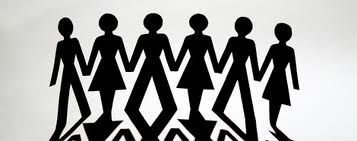

پذيرش > تریبون > مقالات > جایگاه مردان در جنبش برابری خواهانه زنان / عذرا آزری


 جایگاه مردان در جنبش برابری خواهانه زنان / عذرا آزری جایگاه مردان در جنبش برابری خواهانه زنان / عذرا آزری
14 اردیبهشت 1392 - - نسخه قابل چاپ
عذرا آزری (ایمیل)
مبارزات برابری خواهانه زنان تاکنون تغییرات عمیقی در ساختارهای اجتماعی جوامع بشری رخ داده است. زنان توانسته اند در سایه مبارزاتشان به موقعیت نسبتا برابر در برخی جوامع دست یابند. به جرات می توان گفت که مبارزات برابری طلبی زنان موفق ترین جنبش ها در قرن نوزدهم و بیستم به حساب می آید.
مبارزات زنان در راستای تغییر قوانین و ارزش های تک جنسیتی مرد محور بوده و نیز شکستن ساختار های حاکم بر جامعه است که او را تنها در قالب مادر و همسر پذیرا می باشد. ساختار هایی که زن را مختص حوزه خصوصی می داند و مانع از رشد و پویایی زنان در حوزه عمومی شده و از طرف دیگر جوامع انسانی را از استعدادها و توانایی های نیمی از جامعه بشری محروم کرده است. درگذر زمان این ساختارها شکاف عمیقی بین مردان و زنان بوجود آورده است. به عنوان مثال حوزه خصوصی مربوط به زنان شده و حوزه عمومی به مردان اختصاص پیدا کرده است. احساسات و عواطف زنانه است و قدرت و شجاعت مردانگی محسوب می شود. اگر کمی دقیق شویم طرز حوالپرسی یا طریقه نشستن و یا رنگ ها نیز به صورت مردانه و زنانه تقسیم شده اند. اگرچه این تقسیم بندی جنسی با توجه به اینکه محصول حاکمیت طولانی مدت افکار مرد سالار و به نفع آنها می باشد، به ستم و تبعیض علیه زنان منتج شده ولی زندگی مردان را نیز تحت تاثیر قرار داده است. به عنوان مثال دنیز کاندی یوتی در مورد ترکیه سده ی نوزدهم می نویسد: "مردان نسل نو غالبا خود را از ساختارهای مردسالارانه حاکم که آزادی خود آنها را نیز به میزان قابل توجهی محدود میکرد، بیگانه حس می کردند" [1]. در سایه مبارزات فمینیستی نه تنها زنان بلکه مردان نیز از سنتهای دست و پا گیر و تک بعدی رهایی می یابند. به عبارت بهتر، می توان گفت که زنان در مبارزات خود سعی در باز تعریف نقش انسان ها در جوامع بر اساس استعداد و علایق دارند نه بر اساس مردانگی و زنانگی. هدف ایجاد فرصت های یکسان بدون در نظر گرفتن تفاوتهای جنسی است.
مخاطبان جنبش برابری خواهانه زنان، تنها زنان و مشخصا جنس یا طیف خاصی نبوده بلکه همه اقشار جامعه، همه گروه های سنی و همه ی طبقه های اجتماعی را در بر می گیرد. همچنین است در مورد مجریان و فعالان این جنبش. از هر طیف و طبقه ای و جنسی می توانند به عنوان مبارزان این جنبش فعالیت کنند. هرچقدر بیشتر، بهتر! چرا که مسئله زنان مسئله تمام آحاد جامعه است و آگاه کردن زنان به حقوق شان به همان میزان حائز اهمیت است که آموزش مردان برای احترام به حقوق زنان و نهادینه کردن افکار برابری خواهی زنان در مردان.
با توجه به آنچه گفته شد، نه تنها هیچ مخالفتی با حضور مردان در صف مبارزان برابری خواهی وجود ندارد، بلکه این مسئله از دستاوردهای مهم این جنبش نیز محسوب می شود. لکن سئوالی که مطرح می شود این است که مردان چه نقش و جایگاهی می توانند و یا بهتر است در جنبش برابری خواهی زنان داشته باشند؟ ایا مردان می توانند به عنوان رهبران و تئوریسین های این جنبش باشند؟ حضور رهبران مرد چه تاثیری بر جنبش زنان خواهد داشت؟
یک زن تقریبا در تمام ساعات زندگی اش آگاهانه یا نا آگاهانه در معرض تبعیض جنسی قرار می گیرد (در اکثر مواقع از طرف مردان جامعه این تبعیض اعمال می شود). این تبعیض ها در سطوح مختلف، از قوانین وضع شده در جامعه گرفته تا نگاهی که موقع عبور از خیابان به علت زن بودن او را تعقیب میکند، وجود دارد. به سخن دیگر، تعریفی که یک زن از احساس امنیت حتی در یک مکان عمومی دارد خیلی متفاوت است از تعریف یک مرد. زنان بعنوان قربانی تبعیض جنسی بهتر از هر کس دیگری می توانند این مسئله را درک و مطرح کنند. همچنین راه هایی برای رفع انواع تبعیض ارائه دهد. به نظر میرسد مردان نمی توانند تصور واقعی از چیستی تبعیض جنسی داشته باشند و در نتیجه نمی توانند این جنبش را آنچنان که باید پروبلمیزه کنند و یا تئوریسین این جنبش باشند.
نکته مهم دیگر ترویج نگرش ابژه بودن زنان در جامعه است. مردان در همه عرصه های اجتماعی و سیاسی و فرهنگی و ... بازیگران اصلی هستند. مردان سوبژه بوده و زنان در صورت وجود در نقش اوبژه هستند. این تعریف و تقسیم نقش ها در داخل جنبش زنان هم می تواند اتفاق بیفتد. یعنی جنبشی که قرار است زنان را از اوبژه بودن درآورد، عملا این نقش را تحکیم تر می کند. به این صورت که مردان با توجه به اینکه همواره و همه جا دست بالا را در تمام صحنه های اجتماعی دارند با قرار گرفتن در راس جنبش زنان این را نمایش و القا می کنند که مسائل و مشکلات زنان را نیز مردان بهتر می توانند آنالیز کرده، راه حل نشان داده و مدیریت کنند و این یعنی بازتعریف نقش درجه دو برای زنان در یک عرصه اجتماعی دیگر و با عنوان جنبش زنان.
یک مرد به عنوان تئوریسین جنبش برابری خواهانه زنان در بالاترین درجه روشنفکری نیز مسائل را با پرسپکتیو مردانه (نه حتما مردسالارانه) تحلیل و بررسی می کند و این مسئله در تقابل با روح جنبش زنان است. چرا که در این جنبش سعی بر این است که بتوانند نگرش ها و ایده های فارغ از جنسیت و یا تلفیقی از پرسپکتیو های زنان را جایگزین نگرش تک بعدی و تک محوری حاکم در جوامع کنند.
از منظر دیگر وجود رهبران مرد در راس این جنبش باعث می شود زنان جامعه نتوانند خودشان را در داخل این جنبش تعریف کنند. چرا که عملا زنان هویت جنسی خود را در طول زندگی شان در مقابل جنس غالب (مرد) تعریف می کنند و خواسته ها و مطالبات خودشان را در ادبیات رهبران مرد نمی یابند و یا باور نمی کنند. به عبارت دیگر خواستگاه مطالبات (زنان) با صدای این مطالبات (مرد) همخوانی ندارد.
سئوالی که اینجا ممکن است مطرح شود اینست که آیا نفی رهبریت مردان در جنبش زنان نوعی جنس گرایی و یا سکسیم نیست؟ به هیچ وجه! همانگونه که در بالا هم اشاره شد حمایت مردان از مطالبات جنبش زنان و مشارکت و تمکین عملی آنان به خواستهای جنبش یکی از شروط لازم برای موفقیت جنبش است. به همین دلیل هم باید مورد استقبال و تشویق فعالین جنبش قرار گیرد. اما رهبری و ایفای نقش به عنوان تئوریسین بحث دیگری است. علاوه بر مواردی که در مورد اشکالات این امر فوقا ذکر شد، می توان به این مسئله از دید تبعیض مثبت هم نگاه کرد. به این معنی که همانگونه که دادن امتیازات ویژه به زنان در عرصه های رقابتی یکی از راهکارهای جبران ستم و عقب نگه داشته شدن زنان است، می توان این مسئله را به موضوع بحثمان هم تعمیم داد. در واقع یکی از اهداف جنبش زنان ارتقائ درجه خود باوری واقعی در زنان است به این معنا که در طول اعصار حصر زنان در حوزه خصوصی باعث شده است که زنان اعتماد به نفس کافی برای حضور در عرصه عمومی را نداشته باشند و آن عرصه را از آن مردان بدانند و یا در بهترین شرایط مردان را خبره تر و تواناتر از خودشان بدانند. برای بالا بردن خود باوری زنان در همه عرصه ها نیاز به ایجاد فرصت های برابر و یا حتی تبعیض مثبت برای زنان می باشد.
با وجود اینکه هستند فعالینی که حضور مردان در جنبش زنان را در هر سطحی مضر و منفی ارزیابی می کنند اما به به نظر اینجانب مشارکت مردان در جنبش جزو دست آوردهای جنبش بوده و حضور آنها در نقشهای حامی و ساپورتر و نه رهبری به مراتب مفید تر خواهد بود. زیرا جنبش زنان اگر با سرکردگی مردان به دستاوردهای بسیار بزرگ نیز نایل آید این برای زنان پیروزی تلقی نمی شود چرا که پرسپکتیو مردانه به صورت ورژن جدید مردسالارانه در جامعه حضور خواهد داشت.
ارسال به
بالاترین
،
توییتر
،
فریندفید
،
فیسبوک
يادداشت
[1] شیلا روباتم، زنان در تکاپو، ترجمه حشمت الله صباغی، نشر شیرازه، صفحه ۱۵۶
در همين بخش :
 دهمین دورۀ مراسم تندیس صدیقه دولت آبادی ۱۳۹۲ دهمین دورۀ مراسم تندیس صدیقه دولت آبادی ۱۳۹۲
کارت پستالهایی به بهانهی هشت مارس و به یاد همهی مبارزین راه برابری
بیانیه بیش از 350 تن از مدافعان حقوق زنان به مناسبت روز جهانی زن؛ زنان هر روز فرودستتر میشوند
لباسی که برای تن ما دوخته اند! /اعظم بهرامی
چالشها و چشمانداز فعالیت مدنی زنان
ديگر بخش ها :
طرح یک میلیون امضا
|
مقالات
|
سایت نوشته ها
|
اخبار
|
گزارش كمپين
|
گفت و گو
|
علیه سکوت
|
كوچه به كوچه
|
نامه های شما
|
گزارش ویژه
|
گفتگو با اعضا
|
ویژه سالگرد کمپین
|
تصویر برابری
|
دل آرام علی
|
تریبون
|
مقالات
|
تاریخ شفاهی
|
خارج از چارچوب
|
کتابخانه
|
درباره کمپین
|
کمپین در شهرها
|
کمپین در بند
|
صدای تغییر
|
ویژه 22 خرداد
|
لایحه حمایت از خانواده
|
گالری
|
عشا مومنی
|
امیر یعقوبعلی
|
خدیجه مقدم
|
راحله عسگری زاده و نسیم خسروی
|
پروین اردلان،جلوه جواهری، مریم حسین خواه، ناهید کشاورز
|
زینب پیغمبرزاده
|
سعیده امین، سارا ایمانیان، محبوبه حسین زاده، ناهید کشاورز و همایون نامی
|
احترام شادفر
|
نسیم سرابندی زاده،فاطمه دهدشتی
|
وبلاگ مهمان
|
پرونده خرم آباد
|
دستگیری ها
|
مریم مالک
|
پرستو اللهیاری
|
مهرنوش اعتمادی
|
سمیه رشیدی
|
Other Languages
|
همراهان
|
«فراخوان کمپین ده روز با بهاره هدایت»
| English
|